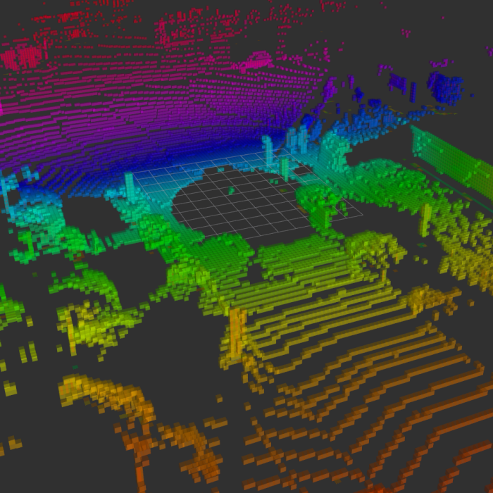
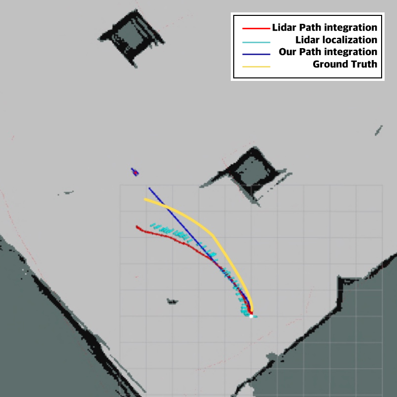
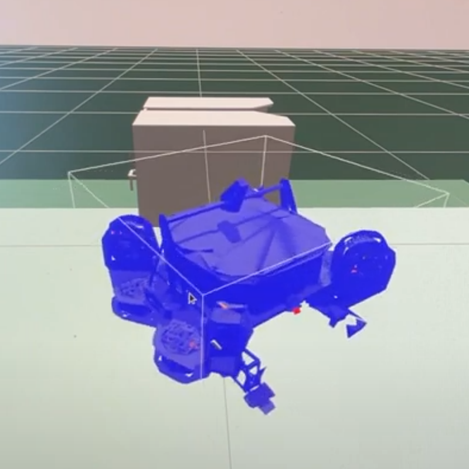

3. ROS Concepts: Understanding Topics, Nodes, Messages, and Services
Jan 1, 2023

Introduction ROS (Robot Operating System) is a powerful framework for building robotic systems. In order to effectively work with ROS, it's important
2. Unleash the Power of ROS: A Beginner's Guide to Creating a Workspace and Package
Jan 1, 2023

Workspace Before writing code in ROS, it is important to ensure that the code is in an appropriate location. The typical location for ROS code is as follows:
1. Join the ROS1 revolution! A step-by-step guide to installing and setting up the Robot Operating
System
Jan 1, 2023

What is ROS? ROS (Robot Operating System) is a free and open-source set of software libraries and tools for building robot applications. It provides hardware ...